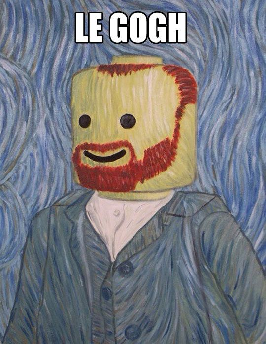
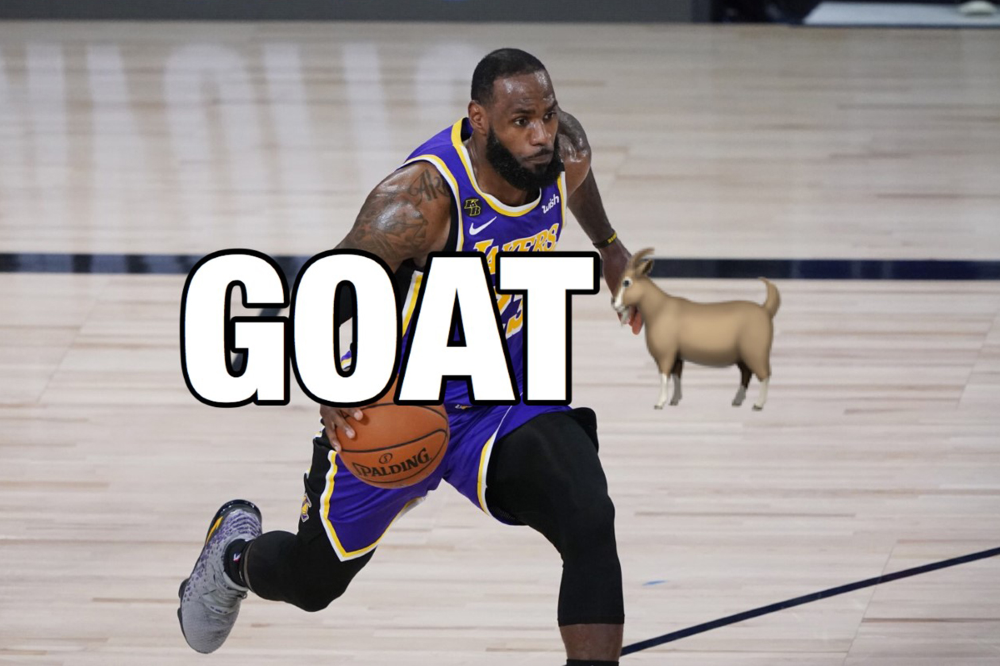

Creative and Active Passions
I love creating art — painting and drawing let me express emotions and capture the beauty of the world around me.
Basketball keeps me active, sharp, and competitive. Whether it's a pickup game or just shooting around, it's always fun!

Reading transports me to different worlds. I enjoy everything from thrilling adventures to thoughtful biographies.
Gaming is not just entertainment for me — it's a way to relax, challenge myself, and sometimes even connect with friends online.
Favorite Activities
| Activity | Why I Love It |
|---|---|
| Art | Creative expression and relaxation |
| Basketball | Staying fit and having fun |
| Reading | Expanding knowledge and imagination |
| Gaming | Entertainment and strategy challenges |
Favorite Tools & Resources
| Item | Purpose | Essential? |
|---|---|---|
| Sketchbook | For practicing drawing and ideas | Yes |
| Basketball | Practicing shots and dribbling | Yes |
| Library Card | Access to a wide range of books | Yes |
| Gaming Console | Playing immersive and interactive games | Yes |